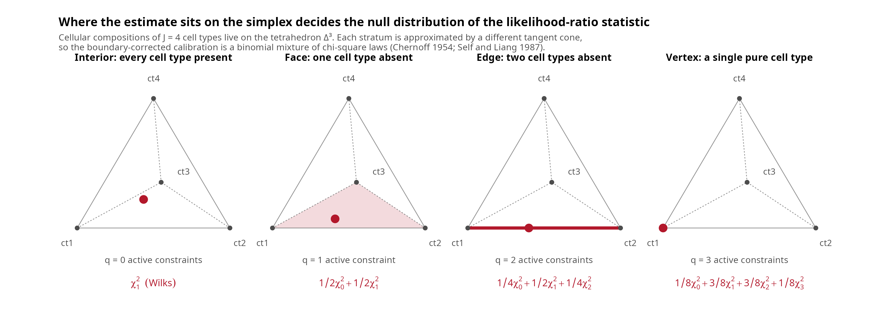

mean_signature <- matrix(c(2, 1, 1, 1, 2, 6 / 5), nrow = 3)
colnames(mean_signature) <- c("ct1", "ct2")
rownames(mean_signature) <- paste0("gene_", 1:3)
Sigma_iso <- array(c(diag(3), diag(3)), dim = c(3, 3, 2))
bulk <- drop(mean_signature %*% c(0.5, 0.5))
hessian_interior <- hessian_loglik_unconstrained(
p = c(1 / 5, 3 / 10),
y = bulk,
mean_signature_matrix = mean_signature,
Sigma = Sigma_iso
)
round(hessian_interior, 4)
#> [,1] [,2]
#> [1,] -208.8794 -342.2303
#> [2,] -342.2303 -391.7123
c(
determinant = det(hessian_interior),
eigen(hessian_interior, symmetric = TRUE)$values
)
#> determinant
#> -35300.95781 53.93367 -654.52539DeCovarT inference: MLE properties, intervals for proportions and a GLM formulation
2026-10-15
Source:vignettes/theory-DeCovarT-MLE-properties.qmd
DeCovarT estimates a composition \boldsymbol{p}\in\Delta^{J-1} by maximising the Gaussian-convolution log-likelihood
\ell_{\boldsymbol{y}\mid\boldsymbol{\zeta}}(\boldsymbol{p}) = -\tfrac{1}{2}\log\det\boldsymbol{\Sigma}(\boldsymbol{p}) -\tfrac{1}{2} (\boldsymbol{y}-\boldsymbol{\mu}\boldsymbol{p})^{\top} \boldsymbol{\Sigma}(\boldsymbol{p})^{-1} (\boldsymbol{y}-\boldsymbol{\mu}\boldsymbol{p}) +C, \qquad \boldsymbol{\Sigma}(\boldsymbol{p})=\sum_{j=1}^{J}p_j^{2}\boldsymbol{\Sigma}_j . \tag{1}
The derivatives of Eq. 1 are collected in the derivatives vignette. This vignette asks three questions.
- What is the estimator entitled to claim? Sec. 1 fixes the parametrisation; Sec. 2 gives identifiability, existence, the failure of concavity and the finite-sample bias.
- How should uncertainty on the proportions be reported? Sec. 3 compares the routes from the unconstrained coordinate \boldsymbol{\rho} to intervals for \boldsymbol{p} (delta method, back-transformed intervals, simulation), the finite-sample devices (Firth penalisation, the sandwich), and what conformal calibration can and cannot certify. Sec. 4 covers likelihood ratios on the boundary and the bootstraps.
- Which model should be fitted to real data? Sec. 6 argues for modelling the conditional mean through a link rather than transforming the data, writes DeCovarT as a multivariate quasi-likelihood model, and ends with the recommended model for a single UMI reference and few bulk samples (Sec. 6.4).
Two facts frame everything below: the realised log-likelihood is not concave and its maximiser need not be unique, and every Wald-type interval is undefined on a simplex face. Their remedies are implemented in lrt_decovart(), confint_profile_decovart(), bootstrap_decovart() and reference_bootstrap_decovart().
The naive model and its parametrisation
The released model treats the reference moments \boldsymbol{\zeta}=(\boldsymbol{\mu},\{\boldsymbol{\Sigma}_j\}) as known and ignores every technical scale of single-cell data (the tailored vignette adds them). The simplex is handled by a chart, not by constraints:
\boldsymbol{p}=\boldsymbol{\psi}(\boldsymbol{\rho})=\operatorname{softmax}(\mathbf{V}\boldsymbol{\rho}), \qquad \boldsymbol{\rho}=\mathbf{V}^{\top}\log\boldsymbol{p}\in\mathbb{R}^{J-1}, \tag{2}
with \mathbf{V} a Helmert basis (derivatives vignette). Two readings of Eq. 2 are useful later.
- An inverse link on the composition. \boldsymbol{\psi} maps a free linear predictor to the simplex, as the inverse multinomial-logit link does in a GLM for categorical responses. Here it acts on a parameter, not on the response: the bulk mean \boldsymbol{\mu}\boldsymbol{p} stays linear in \boldsymbol{p}.
-
The exponential version of
MEAD’s device.MEADestimates unconstrained weights \boldsymbol{\beta}_i=\gamma_i\boldsymbol{p}_i, then sets \hat{\boldsymbol{p}}_i=\hat{\boldsymbol{\beta}}_i^{\star}/\lVert\hat{\boldsymbol{\beta}}_i^{\star}\rVert_1, with either truncation \hat{\boldsymbol{\beta}}_i\vee 0 or, near zero, the softplus h_a(\beta)=a^{-1}\log(1+e^{a\beta}) (Xie et al. 2026). The softplus makes the delta method usable at the boundary, but for any finite a the estimator is not consistent; the authors take a=10 and report slightly lower coverage. Writing the weights as \beta_j=e^{z_j} instead and normalising gives the softmax: positivity is exact, no tuning constant is needed, and Eq. 2 is a reparametrisation, so the MLE in \boldsymbol{\rho} is the MLE in \boldsymbol{p}. The price is the same as for the softplus near zero: a proportion that is truly zero sits at \lVert\boldsymbol{\rho}\rVert=\infty (Sec. 4.3).
Theoretical properties of the DeCovarT MLE
Identifiability
Proposition 1 (Identifiability of the composition) The parameter-to-distribution map is
\boldsymbol{p} \longmapsto \bigl( \boldsymbol{\mu}\boldsymbol{p},\; \boldsymbol{\Sigma}(\boldsymbol{p}) =\textstyle\sum_{j}p_{j}^{2}\boldsymbol{\Sigma}_{j} \bigr). \tag{3}
Two compositions induce the same law \mathcal{N}_G(\boldsymbol{\mu}\boldsymbol{p}, \boldsymbol{\Sigma}(\boldsymbol{p})) only if they coincide, provided that map is injective. Full column rank of \boldsymbol{\mu} (\operatorname{rank}(\boldsymbol{\mu})=J, equivalently linearly independent contrast columns \boldsymbol{\mu}_{\cdot j}-\boldsymbol{\mu}_{\cdot J}) is a convenient sufficient condition, because then the mean map alone is injective on the simplex. It is not necessary. Two cell types may share identical or collinear mean profiles and remain identifiable when their covariances differ: the second component of Eq. 3 still separates \boldsymbol{p}. Conversely, identical means and proportional covariances (\boldsymbol{\Sigma}_{2}=c\boldsymbol{\Sigma}_{1}) make the Gaussian family non-injective.
Identifiability is a property of the reference, not of the bulk sample: no amount of sequencing rescues a pair of types that agree in both mean and covariance. The mean-based condition number \kappa(\boldsymbol{\mu}) is therefore a misleading diagnostic in the covariance-only regime DeCovarT targets (see the feature-selection vignette). Near-collinear means are still reported as a warning by fit_decovart(); that warning does not by itself imply that \boldsymbol{p} is unidentifiable. Numerical illustrations live in the appendix simulations.
Existence
Proposition 2 (Existence of a maximiser) If every \boldsymbol{\Sigma}_j is symmetric positive definite, then \boldsymbol{\Sigma}(\boldsymbol{p})=\sum_j p_j^{2}\boldsymbol{\Sigma}_j is positive definite for every \boldsymbol{p}\in\Delta^{J-1}, since at least one p_j>0 on the simplex. Hence Eq. 1 is finite and continuous on the compact set \Delta^{J-1}, and attains its supremum.
Two practical consequences. First, positive definiteness is preserved even when some proportions are exactly zero, which is what allows the restricted maximisation of restricted_mle_decovart() to represent a null such as p_j=0 exactly instead of pushing it through a logarithm. Second, the maximiser may lie on the boundary of the compact set, so first-order conditions \nabla\ell=\boldsymbol{0} are necessary only at interior optima.
Uniqueness fails for one observed sample
Existence is not uniqueness. The DeCovarT likelihood is a heteroscedastic Gaussian model: the noise covariance depends on the same parameter as the mean, so Eq. 1 is not the concave objective of an ordinary linear regression. Even in the isotropic case \boldsymbol{\Sigma}_1=\boldsymbol{\Sigma}_2=\mathbf{I}_G with J=2 and without the simplex constraint,
\ell(\boldsymbol{p}) = -\frac{G}{2}\log(p_1^{2}+p_2^{2}) - \frac{\lVert\boldsymbol{y}-\boldsymbol{\mu}\boldsymbol{p}\rVert^{2}} {2(p_1^{2}+p_2^{2})} +C , \tag{4}
whose variance term moves with the coefficients. A single evaluation of the analytic Hessian settles the question.
Every entry of \boldsymbol{y} and \boldsymbol{\mu} is strictly positive, \operatorname{rank}(\boldsymbol{\mu})=2, G=3>J=2, and both covariances are positive definite. Yet the Hessian at the strictly interior point \boldsymbol{p}=(1/5,3/10) has one positive and one negative eigenvalue.
Important 1: One indefinite Hessian disproves global concavity
A negative determinant at a single admissible point is a counterexample, so the unconstrained DeCovarT log-likelihood is not globally concave under the stated positivity and rank assumptions. The same conclusion transfers to the isometric log-ratio chart, because a C^{2} diffeomorphism preserves the existence of directions of positive curvature. Consequently:
- a converged optimiser certifies a local maximum at best;
- several starts may reach different modes (see Sec. 5);
- convex-optimisation guarantees — a unique global optimum reachable by descent, and duality certificates — do not apply (Boyd et al. 2004). The Marquardt–Levenberg damping of
marqLevAlg(Philipps et al. 2023, 2021) and the relative-distance-to-minimum criterion of Commenges et al. (2006) buy robustness against saddle points, not global optimality.
Population consistency and efficiency
The failure of concavity is a statement about one realised data set. The population criterion behaves much better. Let \boldsymbol{p}_0 be the truth and define Q(\boldsymbol{p};\boldsymbol{p}_0) =\mathbb{E}_{\boldsymbol{p}_0}\{\ell_{\boldsymbol{Y}}(\boldsymbol{p})\}.
Theorem 1 (Population uniqueness through the Kullback–Leibler divergence) Q(\boldsymbol{p}_0;\boldsymbol{p}_0)-Q(\boldsymbol{p};\boldsymbol{p}_0) = D_{\mathrm{KL}}\bigl( P_{\boldsymbol{p}_0}\,\Vert\,P_{\boldsymbol{p}} \bigr) \ \ge\ 0 , \tag{5}
with equality if and only if P_{\boldsymbol{p}}=P_{\boldsymbol{p}_0}. Under Proposition 1 that happens only at \boldsymbol{p}=\boldsymbol{p}_0, so \boldsymbol{p}_0 is the unique maximiser of the expected log-likelihood.
Eq. 5 is an identifiability statement, not a curvature statement: it survives the non-concavity of Note 1. It is also the engine of the usual asymptotics — consistency, asymptotic normality and efficiency of the MLE (Vaart 2000) — because the local geometry of the divergence is the Fisher information. By the Fisher information metric theorem,
D_{\mathrm{KL}}\bigl( P_{\boldsymbol{p}_0}\,\Vert\,P_{\boldsymbol{p}_0+\boldsymbol{d}} \bigr) = \tfrac{1}{2}\, \boldsymbol{d}^{\top}I(\boldsymbol{p}_0)\,\boldsymbol{d} + o(\lVert\boldsymbol{d}\rVert^{2}) , \tag{6}
with I the expected information of expected_fisher_unconstrained(); the Gaussian case is treated in information-geometric terms by Malago and Pistone (2015). The identity is worth checking numerically, since it ties the plug-in vcov of a DeCovarT fit to the divergence that makes the MLE consistent.
kl_gaussian_convolution <- function(p_ref, p_alt, mu, Sigma) {
mean_ref <- drop(mu %*% p_ref)
mean_alt <- drop(mu %*% p_alt)
cov_ref <- .compute_global_variance(p_ref, Sigma)
cov_alt <- .compute_global_variance(p_alt, Sigma)
precision_alt <- solve(cov_alt)
shift <- mean_alt - mean_ref
0.5 *
(sum(diag(precision_alt %*% cov_ref)) -
nrow(cov_ref) +
drop(t(shift) %*% precision_alt %*% shift) +
as.numeric(determinant(cov_alt, logarithm = TRUE)$modulus) -
as.numeric(determinant(cov_ref, logarithm = TRUE)$modulus))
}
p_reference <- c(0.4, 0.6)
information <- expected_fisher_unconstrained(
p_reference,
mean_signature,
Sigma_iso
)
steps <- c(1e-2, 1e-3, 1e-4)
data.frame(
step = steps,
kullback_leibler = vapply(
steps,
function(h) {
kl_gaussian_convolution(
p_reference,
p_reference + c(h, -h / 2),
mean_signature,
Sigma_iso
)
},
numeric(1)
),
quadratic_form = vapply(
steps,
function(h) {
d <- c(h, -h / 2)
0.5 * drop(t(d) %*% information %*% d)
},
numeric(1)
)
)
#> step kullback_leibler quadratic_form
#> 1 1e-02 2.432446e-04 2.428254e-04
#> 2 1e-03 2.428691e-06 2.428254e-06
#> 3 1e-04 2.428298e-08 2.428254e-08The two columns agree to the order of \lVert\boldsymbol{d}\rVert^{3}, as Eq. 6 predicts.
Finite-sample bias versus asymptotic unbiasedness
Theorem 1 is a statement about the expected criterion Q(\boldsymbol{p};\boldsymbol{p}_0). It does not say that the maximiser of one realised log-likelihood equals \boldsymbol{p}_0. Typical bulk deconvolution observes a single G-vector \boldsymbol{Y}_{\cdot i}\sim\mathcal{N}_G(\boldsymbol{\mu} \boldsymbol{p}_{\cdot i},\boldsymbol{\Sigma}(\boldsymbol{p}_{\cdot i})) and treats that column as N=1. The resulting MLE is then a nonlinear function of one Gaussian draw, so \mathbb{E}_{\boldsymbol{p}_0}(\hat{\boldsymbol{p}})\neq\boldsymbol{p}_0 in general: the leading bias of a regular MLE is O(N^{-1}) (Vaart 2000, ch. 5). The same map becomes consistent, and \sqrt{N}-normal with variance I(\boldsymbol{p}_0)^{-1}, once N i.i.d. bulk columns share one composition, because the averaged criterion converges to Q and Q has a unique maximiser at \boldsymbol{p}_0.
Two calculations are easy to confuse and are not the same.
Score identity. If the convolution is correctly specified, \mathbb{E}_{\boldsymbol{p}_0}\{\nabla\ell_{\boldsymbol{Y}}(\boldsymbol{p}_0)\}=\boldsymbol{0}. The identity is a property of the random bulk. It is what the Fisher metric of Eq. 6 linearises.
Mean-profile remainder. Substituting the conditional mean \boldsymbol{y}=\boldsymbol{\mu}\boldsymbol{p}_0 into the score of Eq. 1 kills the Mahalanobis terms and leaves only the derivative of -\tfrac12\log\det\boldsymbol{\Sigma}(\boldsymbol{p}). In unconstrained \boldsymbol{p}-coordinates that remainder is -p_j\operatorname{tr}\bigl(\boldsymbol{\Omega}(\boldsymbol{p}) \boldsymbol{\Sigma}_j\bigr) at each j, with \boldsymbol{\Omega}=\boldsymbol{\Sigma}(\boldsymbol{p})^{-1}. Mapped through the ILR chart it vanishes by symmetry when \boldsymbol{p}_0=(1/2,1/2) and \boldsymbol{\Sigma}_1=\boldsymbol{\Sigma}_2, and it does not vanish at an unbalanced interior point. Hence the maximiser of \ell(\,\cdot\,;\boldsymbol{\mu}\boldsymbol{p}_0) need not equal \boldsymbol{p}_0 even though that bulk sits at the centre of the model. The bias of the random MLE is a different, typically larger, effect: \hat{\boldsymbol{p}} is a nonlinear function of \boldsymbol{Y}, and near a simplex face the ILR chart sends p_j\to 0 to |\rho|\to\infty so that a plateau in \ell (see Sec. 4.3) inflates the O(N^{-1}) term.
Convex-optimisation guarantees do not close the gap. Boyd and Vandenberghe emphasise that a local maximum of a non-concave objective need not be global, and that first-order stationarity certifies optimality only under convexity (Boyd et al. 2004, ch. 1 and 4). Note 1 already exhibits an indefinite Hessian for one bulk, so a converged solver certifies a local maximiser of that sample’s \ell, not uniqueness and not unbiasedness. What is uniquely maximised is Q, and only after N\to\infty (or after pooling genuine replicates; Sec. 4.4) does \hat{\boldsymbol{p}}_N concentrate there.
mu_cld <- matrix(c(20, 22, 22, 20), nrow = 2)
Sigma_id <- array(c(diag(2), diag(2)), dim = c(2, 2, 2))
p_balanced <- c(0.5, 0.5)
p_rare <- c(0.99, 0.01)
y_at_mean <- function(p) {
drop(mu_cld %*% p)
}
score_at_mean <- function(p) {
gradient_loglik_constrained(
isometric_log_ratio(p),
y_at_mean(p),
mu_cld,
Sigma_id
)
}
set.seed(1)
cov_rare <- .compute_global_variance(p_rare, Sigma_id)
mean_score_random <- mean(replicate(200, {
y <- MASS::mvrnorm(
n = 1,
mu = y_at_mean(p_rare),
Sigma = cov_rare
)
gradient_loglik_constrained(
isometric_log_ratio(p_rare),
y,
mu_cld,
Sigma_id
)
}))
data.frame(
composition = c("balanced 50-50", "rare type 0.01"),
ilr_score_at_conditional_mean = c(
score_at_mean(p_balanced),
score_at_mean(p_rare)
),
mean_ilr_score_at_truth = c(NA_real_, mean_score_random)
)
#> composition ilr_score_at_conditional_mean mean_ilr_score_at_truth
#> 1 balanced 50-50 0.00000000 NA
#> 2 rare type 0.01 -0.02799572 0.0004500902The ILR score at the conditional mean is zero in the balanced isotropic case and of order 10^{-2} at p=(0.99,0.01). Averaging the same score over random \boldsymbol{Y}\sim\mathcal{N}_G(\boldsymbol{\mu}\boldsymbol{p}_0,
\boldsymbol{\Sigma}(\boldsymbol{p}_0)) returns a number consistent with zero, as the information identity requires. Finite-sample bias of \hat{\boldsymbol{p}} is therefore not a failure of \mathbb{E}(\nabla\ell)=0; it is the nonlinearity of the maximiser, amplified when Eq. 1 is nearly flat along a simplex face. The bivariate and covariance-driven Monte Carlo packs in output/fig02/mle_explanation/ and output/fig03/mle_explanation/ quantify that geometry for N=1 (see the bivariate toy and the covariance-driven scenario). A Jeffreys / Firth adjustment of \ell (Firth 1993) is an outlook for shrinking the O(N^{-1}) term when replicates are scarce (perspectives).
Equivariance: affine yes, logarithmic no
Proposition 3 (Gene-wise affine equivariance) Let D=\operatorname{diag}(s_1,\ldots,s_G) with s_g\neq 0 and \boldsymbol{m}\in\mathbb{R}^{G}. Applying the same gene-wise map to all three inputs,
\boldsymbol{y}^{\star}=D^{-1}(\boldsymbol{y}-\boldsymbol{m}), \quad \boldsymbol{\mu}^{\star} =D^{-1}(\boldsymbol{\mu}-\boldsymbol{m}\mathbf{1}_J^{\top}), \quad \boldsymbol{\Sigma}_j^{\star}=D^{-1}\boldsymbol{\Sigma}_j D^{-1},
leaves the MLE unchanged, because \mathbf{1}_J^{\top}\boldsymbol{p}=1 makes the recentring cancel and the Mahalanobis residual is invariant.
A z-score computed once per gene from \boldsymbol{\mu} is such a map, which is why fit_decovart(standardise = TRUE) is safe. Per-cell-type or per-sample scaling is not, and neither is a logarithm: \log is concave, so Jensen’s inequality shifts both moments and \log(\boldsymbol{\mu}\boldsymbol{p})
\neq(\log\boldsymbol{\mu})\boldsymbol{p}. Reference-based deconvolution therefore expects a non-log linear scale (Newman et al. 2015): keep raw counts (or a linear normalisation such as CPM/TPM) rather than \log_2 values. Monotonicity of \log preserves gene-wise rankings, but not the convolution MLE. The numerical demonstration lives in the appendix simulations.
Confidence intervals for the proportions
The solver returns \hat{\boldsymbol{\rho}} and an information matrix in \boldsymbol{\rho}-coordinates, I_{\boldsymbol{\rho}}=\mathbf{J}_{\boldsymbol{\psi}}^{\top}I(\boldsymbol{p})\mathbf{J}_{\boldsymbol{\psi}} with \mathbf{J}_{\boldsymbol{\psi}}=\mathbf{S}(\boldsymbol{p})\mathbf{V} (derivatives vignette). Under regularity, \hat{\boldsymbol{\rho}}\overset{a}{\sim}\mathcal{N}(\boldsymbol{\rho}_0,I_{\boldsymbol{\rho}}^{-1}). There are several ways to turn that statement into an interval for each p_j, and they do not behave alike.
From \boldsymbol{\rho} to \boldsymbol{p}: four Wald-type routes
-
Delta method on \boldsymbol{p}. \operatorname{Var}(\hat{\boldsymbol{p}})\approx\mathbf{J}_{\boldsymbol{\psi}}I_{\boldsymbol{\rho}}^{-1}\mathbf{J}_{\boldsymbol{\psi}}^{\top} and \hat p_j\pm z_{1-\alpha/2}\mathrm{SE}_j. This is the default of
confint.decovart_fit(). It is symmetric, and nothing keeps its endpoints inside [0,1]. - Back-transformed endpoints, J=2. With two types, p_1=\operatorname{logistic}(\sqrt{2}\,\rho) is monotone in the single coordinate. The interval [\hat\rho\pm z\,\mathrm{SE}(\hat\rho)] maps to [\psi(\hat\rho-z\,\mathrm{SE}),\psi(\hat\rho+z\,\mathrm{SE})], which lies strictly inside (0,1) and is asymmetric around \hat p_1.
- Component-wise logit, any J. For J>2, each p_j depends on all J-1 coordinates, so transforming the endpoints of each \rho_k interval does not give an interval for p_j. Apply the delta method to \eta_j=\operatorname{logit}(p_j) instead, \mathrm{SE}(\hat\eta_j)=\mathrm{SE}(\hat p_j)/\{\hat p_j(1-\hat p_j)\}, and back-transform \hat\eta_j\pm z\,\mathrm{SE}(\hat\eta_j). For J=2 this is route 2.
- Simulation through the chart. Draw \boldsymbol{\rho}^{(b)}\sim\mathcal{N}(\hat{\boldsymbol{\rho}},I_{\boldsymbol{\rho}}^{-1}), map every draw to \boldsymbol{p}^{(b)}=\boldsymbol{\psi}(\boldsymbol{\rho}^{(b)}), and take marginal quantiles. Every draw is a composition, so the intervals lie inside (0,1) and respect the sum-to-one constraint jointly.
The transformation guarantees the bounds, not the coverage: all four routes rest on the same normal approximation of \hat{\boldsymbol{\rho}}. The simulation below checks both on an unbalanced three-type mixture with a rare type (p_3=0.03), refitting DeCovarT on independent bulk draws of one composition.
set.seed(2026)
n_genes <- 8L
n_types <- 3L
n_rep <- 300L
mu_cov <- matrix(
rgamma(n_genes * n_types, shape = 4, rate = 0.2),
n_genes,
n_types,
dimnames = list(paste0("gene_", seq_len(n_genes)), paste0("ct", seq_len(n_types)))
)
Sigma_cov <- array(
0,
c(n_genes, n_genes, n_types),
dimnames = list(rownames(mu_cov), rownames(mu_cov), colnames(mu_cov))
)
for (j in seq_len(n_types)) {
loadings <- matrix(rnorm(n_genes^2, sd = 0.3), n_genes)
Sigma_cov[, , j] <- crossprod(loadings) + diag(n_genes)
}
p_true <- c(ct1 = 0.85, ct2 = 0.12, ct3 = 0.03)
bulk <- simulate_bulk_mixture(mu_cov, Sigma_cov, p = p_true, n = n_rep)$Y
fit_cov <- fit_decovart(mu_cov, bulk, Sigma = Sigma_cov, itmax = 200)
p_hat <- coef(fit_cov)
z_crit <- qnorm(0.975)
interval_routes <- function(p, n_draws = 2000L) {
rho <- isometric_log_ratio(p)
jac <- jacobian_isometric_logistic(rho)
info_rho <- t(jac) %*%
expected_fisher_unconstrained(p, mu_cov, Sigma_cov) %*%
jac
vcov_rho <- solve(info_rho)
se_p <- sqrt(diag(jac %*% vcov_rho %*% t(jac)))
se_logit <- se_p / (p * (1 - p))
draws <- MASS::mvrnorm(n_draws, rho, vcov_rho)
p_draws <- t(apply(draws, 1L, isometric_logistic))
list(
delta = cbind(p - z_crit * se_p, p + z_crit * se_p),
logit = cbind(
plogis(qlogis(p) - z_crit * se_logit),
plogis(qlogis(p) + z_crit * se_logit)
),
simulation = t(apply(p_draws, 2L, quantile, probs = c(0.025, 0.975)))
)
}
# Wald-type routes need an interior estimate: on a face the ILR chart
# diverges and the information in rho is singular.
interior <- apply(p_hat, 2L, min) > 1e-6
routes <- lapply(which(interior), function(i) interval_routes(p_hat[, i]))
summarise_route <- function(name) {
lower <- sapply(routes, function(r) r[[name]][, 1])
upper <- sapply(routes, function(r) r[[name]][, 2])
data.frame(
route = name,
cell_type = names(p_true),
coverage = rowMeans(lower <= p_true & p_true <= upper),
outside_unit_interval = rowMeans(lower < 0 | upper > 1),
median_width = apply(upper - lower, 1L, median)
)
}
route_summary <- do.call(
rbind,
lapply(c("delta", "logit", "simulation"), summarise_route)
)
rownames(route_summary) <- NULL
knitr::kable(route_summary, digits = 3)| route | cell_type | coverage | outside_unit_interval | median_width |
|---|---|---|---|---|
| delta | ct1 | 0.920 | 0.080 | 0.174 |
| delta | ct2 | 0.945 | 0.360 | 0.208 |
| delta | ct3 | 0.949 | 0.724 | 0.090 |
| logit | ct1 | 0.920 | 0.000 | 0.176 |
| logit | ct2 | 0.920 | 0.000 | 0.220 |
| logit | ct3 | 0.895 | 0.000 | 0.116 |
| simulation | ct1 | 0.869 | 0.000 | 0.215 |
| simulation | ct2 | 0.938 | 0.000 | 0.226 |
| simulation | ct3 | 0.927 | 0.000 | 0.119 |
Out of 300 fits, 25 returned an estimate on a simplex face, where no Wald-type route is defined; the table is computed on the 275 interior fits. Three readings follow.
- The delta method places 72% of the intervals for the rare type partly below zero. Truncating them at zero would hide, not fix, the problem.
- The logit and simulation routes never leave (0,1) and are wider for the rare type, as an asymmetric interval should be.
- No route reaches 95% everywhere. One bulk column is a single observation of one composition (Sec. 4.4): the normal approximation of \hat{\boldsymbol{\rho}} is itself the weak link, and the routes only change how its error is mapped to the simplex.
The delta method on \boldsymbol{p} is therefore defensible only for balanced mixtures with few types, where every \hat p_j is far from zero. Otherwise report the logit or simulation route, or the profile interval of Sec. 4.2, which needs no normal approximation of \hat{\boldsymbol{\rho}} at all.
Firth penalisation and finite-sample corrections
Two finite-sample problems remain: the O(N^{-1}) bias of the MLE (Sec. 2.5), and estimates that run to a face because the likelihood is flat there. Firth’s adjustment addresses both. It maximises
\ell_{\mathrm{F}}(\boldsymbol{\vartheta})=\ell(\boldsymbol{\vartheta})+\tfrac12\log\det I(\boldsymbol{\vartheta}) (Firth 1993). With the general Fisher information the adjusted score is
\frac{\partial\ell_{\mathrm{F}}}{\partial\vartheta_q} =\frac{\partial\ell}{\partial\vartheta_q} +\tfrac12\,\mathrm{tr}\Bigl(I(\boldsymbol{\vartheta})^{-1}\frac{\partial I(\boldsymbol{\vartheta})}{\partial\vartheta_q}\Bigr). \tag{7}
For the cell-count model of independent cells, linear covariance the information depends on \boldsymbol{m} only through \boldsymbol{\Omega}, and \partial\boldsymbol{\Omega}/\partial m_q=-\boldsymbol{\Omega}\boldsymbol{\Sigma}_{W,q}\boldsymbol{\Omega}, so
\frac{\partial I(\boldsymbol{m})_{kl}}{\partial m_q} =-\boldsymbol{\mu}_{\cdot k}^{\top}\boldsymbol{\Omega}\boldsymbol{\Sigma}_{W,q}\boldsymbol{\Omega}\boldsymbol{\mu}_{\cdot l} -\mathrm{tr}\bigl(\boldsymbol{\Omega}\boldsymbol{\Sigma}_{W,k}\boldsymbol{\Omega}\boldsymbol{\Sigma}_{W,q}\boldsymbol{\Omega}\boldsymbol{\Sigma}_{W,l}\bigr), \tag{8}
where the two trace terms of the product rule coincide by transposition and cyclicity. Both summands are negative semidefinite contributions: information about counts decreases as counts grow, because more cells inflate \boldsymbol{S}_W(\boldsymbol{m}) and deflate \boldsymbol{\Omega}. Jeffreys’ prior \sqrt{\det I} therefore favours small totals, and the Firth penalty on the cell-count chart pulls \hat n_i downward. That is a prior statement, not a proven bias reduction: Firth’s exact removal of the O(N^{-1}) term holds for the canonical parameter of a full exponential family, whereas a Gaussian whose mean and covariance both depend on \boldsymbol{\vartheta} is a curved family, where the Jeffreys penalty is one of several bias-reducing modified scores and does not cancel the first-order bias exactly. On the simplex chart of Strategy 2 the same derivative applies to the \boldsymbol{p} block with \kappa fixed, and the collapse of \det I near faces and under collinear signatures is the regularising effect already argued in the perspectives vignette. A simulation under the ADEMP template of the synthetic-scenarios vignette is the only way to decide whether the pull is a correction or a bias.
DECALS corrects a different estimator. Its moment regression estimates the type-level covariances from residuals computed with \hat{\boldsymbol{\pi}}_i instead of \boldsymbol{\pi}_i, and the finite-sample gap between \hat{\boldsymbol{H}}=[\hat\pi_{ik}^{2}] and \boldsymbol{H}=[\pi_{ik}^{2}] deflates the estimated covariance and the coverage of its intervals. Proposition 1 of Cai et al. (2024) quantifies \mathbb{E}[\hat{\boldsymbol{H}}^{\top}\hat{\boldsymbol{H}}-\boldsymbol{H}^{\top}\boldsymbol{H}] and \mathbb{E}[\hat{\boldsymbol{H}}-\boldsymbol{H}] in terms of the asymptotic covariance V_i of \hat{\boldsymbol{\pi}}_i and subtracts them (their equation 7). The DeCovarT analogue is the plug-in of estimated covariances. If \hat{\boldsymbol{\Sigma}}_{W,j} is the sample covariance of C_j Gaussian cells, \nu_j=C_j-1, then \mathbb{E}[\hat{\boldsymbol{\Sigma}}_{W,j}^{-1}]=\tfrac{\nu_j}{\nu_j-G-1}\boldsymbol{\Sigma}_{W,j}^{-1} for \nu_j>G+1: the plug-in precision is inflated by a factor that is far from one for rare types with few cells and many genes. The first-order correction multiplies \hat{\boldsymbol{\Omega}}_{W,j} by (\nu_j-G-1)/\nu_j; the graphical-lasso shrinkage of the reproducibility book is the regularised alternative when \nu_j\le G+1. The two corrections are complementary: Firth acts on the likelihood geometry of the composition, the Wishart or DECALS correction acts on the covariance that the likelihood plugs in. A DECALS-style iteration, alternating between \hat{\boldsymbol{p}}_{\cdot i} and a bias-corrected \hat{\boldsymbol{\Sigma}}_{B,j} regressed on \hat p_{ji}^{2} across N bulk samples, is the route to a between-population covariance when the reference has a single replicate.
In the \boldsymbol{\rho} chart the penalty has a further effect. The information I_{\boldsymbol{\rho}}=\mathbf{J}_{\boldsymbol{\psi}}^{\top}I(\boldsymbol{p})\mathbf{J}_{\boldsymbol{\psi}} inherits the factor \mathbf{S}(\boldsymbol{p}), whose determinant tends to zero as any p_j\to 0, so \tfrac12\log\det I_{\boldsymbol{\rho}}\to-\infty at the faces. The penalised estimate is therefore always finite in \boldsymbol{\rho}, and Wald-type intervals around it are always defined (our remark; the effect on coverage has to be checked by simulation). The penalty is the log of the Jeffreys prior, so the penalised estimate is also a posterior mode (Bayesian vignette).
The sandwich for a misspecified convolution
If the Gaussian convolution is wrong in its variance, for example because counts are overdispersed or the reference covariance is mis-estimated, the inverse information understates the variance of \hat{\boldsymbol{\rho}}. The Godambe sandwich \boldsymbol{H}^{-1}\boldsymbol{K}\boldsymbol{H}^{-1}, with \boldsymbol{H} the negative Hessian and \boldsymbol{K} the variance of the score, corrects this; RNA-Sieve uses it by default (Erdmann-Pham et al. 2021). Its difficulty here is \boldsymbol{K}: one bulk column gives one score vector.
A construction that works with one column (our proposal, not implemented) uses the sequential factorisation of the Gaussian likelihood. With the Cholesky factor \boldsymbol{L}(\boldsymbol{p}) of \boldsymbol{\Sigma}(\boldsymbol{p}) and \boldsymbol{e}=\boldsymbol{L}^{-1}(\boldsymbol{y}-\boldsymbol{\mu}\boldsymbol{p}),
\ell(\boldsymbol{\rho})=\sum_{g=1}^{G}\ell_g(\boldsymbol{\rho}), \qquad \ell_g=-\log L_{gg}-\tfrac12e_g^{2}, \tag{9}
where \ell_g is the log-density of y_g given y_1,\ldots,y_{g-1}. Under the model the scores \nabla\ell_g are martingale differences, so \hat{\boldsymbol{K}}=\sum_g\nabla\ell_g\nabla\ell_g^{\top} estimates the score variance without assuming independent genes. Two limits apply: the decomposition depends on the gene order when the model is wrong, and G contributions to a (J-1)\times(J-1) matrix are few when G is small. Combined with Firth’s penalty, the robust variance of the penalised estimate is \boldsymbol{H}_{\mathrm{F}}^{-1}\hat{\boldsymbol{K}}\boldsymbol{H}_{\mathrm{F}}^{-1}.
What conformal calibration can certify
Burakov’s chapter on logistic regression (PDF) proposes split-conformal intervals for a fitted probability, with the Pearson residual r_i=(y_i-\hat p_i)/\sqrt{\hat p_i(1-\hat p_i)} as nonconformity score: fit on training data, take the (1-\alpha) quantile q of |r_i| on a calibration set, and report \hat p\pm q\sqrt{\hat p(1-\hat p)}, clipped to [0,1] (chapter 2 of Burakov, Logistic Regression: From Maximum Likelihood to Machine Learning, an external resource, not a bibliographic entry). Split-conformal theory guarantees marginal, finite-sample coverage of the observed label under exchangeability. Here |r|\le q is exactly the event that y falls in the interval, which the chapter itself calls an inappropriate target for a probability; nothing in the construction guarantees coverage of the true probability.
The same distinction decides what conformal calibration can do for DeCovarT, whose target is a parameter, \boldsymbol{p}, not a prediction.
- Gene-level Pearson residuals z=\boldsymbol{L}^{-1}(\boldsymbol{y}-\boldsymbol{\mu}\hat{\boldsymbol{p}}) calibrate predictions of expression. Genes are not exchangeable, being correlated by design, so no conformal guarantee follows. They remain a useful dispersion check: \hat\phi=\lVert\boldsymbol{z}\rVert^{2}/(G-J+1) well above one signals that the information understates the variance, and inflating I_{\boldsymbol{\rho}}^{-1} by \hat\phi is the quasi-likelihood correction of Sec. 6.
- Calibrating \boldsymbol{p} itself needs calibration bulks with known composition, such as pseudo-bulks built from held-out cells. With the score s=(\hat{\boldsymbol{\rho}}-\boldsymbol{\rho})^{\top}\hat{\boldsymbol{V}}^{-1}(\hat{\boldsymbol{\rho}}-\boldsymbol{\rho}) and the \lceil(n+1)(1-\alpha)\rceil-th smallest calibration score as threshold, the ellipsoid \{s\le q\} mapped through \boldsymbol{\psi} is a region inside the simplex with finite-sample marginal coverage, averaged over the pseudo-bulk generator. It says nothing about one given sample, and nothing about real bulk samples that the generator does not mimic, which cannot be checked because real bulk samples have no labels.
Likelihood-ratio, boundary and resampling inference
Where the estimate sits decides the null distribution
The admissible set is a polytope, and a composition can sit in its interior or on a stratum of its boundary. With J=4 cell types \Delta^{3} is a tetrahedron whose strata are the interior, four triangular faces, six edges and four vertices, corresponding to q=0,1,2 or 3 proportions equal to zero (Figure 1).

ct3. Below each panel, q counts the constraints active at the estimate and the red expression is the resulting null law of the likelihood-ratio statistic: the ordinary \chi^2_1 of Wilks (1938) in the interior, and binomially weighted chi-square mixtures on the boundary strata (Chernoff 1954; Self and Liang 1987).
The reason the calibration changes is geometric. Self and Liang (1987) show that the boundary problem is asymptotically equivalent to estimating the restricted mean of a single multivariate Gaussian draw: the limiting law of the normalised MLE is the distribution of the projection of a Gaussian score onto the tangent cone that approximates the admissible set at \boldsymbol{p}_0. In the interior that cone is the whole of \mathbb{R}^{J-1} and the projection is the identity, recovering classical theory; at a face it is a half-space, at an edge a two-dimensional wedge, and at a vertex a simplicial cone. A visual introduction to tangent and normal cones is available in these ESIEE optimisation notes.
Interior nulls: Wald and profile likelihood
For an interior null H_0:p_j=c with 0<c<1, two statistics are available.
The Wald statistic is the cheap one: (\hat{p}_j-c)/\mathrm{SE}_j with \mathrm{SE}_j the delta-method standard error of vcov_ilr_delta(), giving the symmetric interval of confint.decovart_fit(). It costs one matrix inversion, but it linearises the isometric log-ratio chart at \hat{\boldsymbol{p}} (Oehlert 1992) and is therefore not invariant to reparametrisation and can place limits outside [0,1].
The Wald statistic also fails non-monotonically near a boundary. As the estimate moves away from the null, the statistic can shrink towards zero, which is the Hauck–Donner effect (Yee 2022). The effect corresponds to estimates near the boundary of the parameter space, and Yee (2022) shows it is detected by comparing pairwise ratios of Wald, score and likelihood-ratio statistics. So a large p-value from a near-simplex-vertex Wald test can be an artefact, not evidence for the null. Use the profile likelihood-ratio statistic below in that regime.
The profile likelihood-ratio statistic
D_j(c) = 2\bigl\{ \ell(\hat{\boldsymbol{p}}) - \max_{\boldsymbol{p}\in\Delta^{J-1},\,p_j=c}\ell(\boldsymbol{p}) \bigr\} \ \rightsquigarrow\ \chi^{2}_{1} \tag{10}
concentrates out the other J-2 proportions instead. Because a smooth bijection leaves likelihood ratios unchanged, Eq. 10 needs no delta method and respects the simplex automatically. Inverting it gives the asymmetric intervals of confint_profile_decovart().
signature <- matrix(
c(20, 40, 15, 40, 20, 25, 25, 30, 35),
nrow = 3,
dimnames = list(paste0("gene_", 1:3), paste0("ct", 1:3))
)
Sigma <- array(
0,
dim = c(3, 3, 3),
dimnames = list(
rownames(signature),
rownames(signature),
colnames(signature)
)
)
for (j in 1:3) {
Sigma[, , j] <- diag(3) * c(1, 1.5, 1.2)[j]
}
# Eight technical replicates of ONE composition, so the asymptotics of
# Sec. 2.4 are taken in a meaningful direction.
set.seed(11)
replicates <- simulate_bulk_mixture(
signature_matrix = signature,
Sigma = Sigma,
p = c(0.45, 0.35, 0.20),
n = 8
)$Y
round(
confint_profile_decovart(
bulk_expression = replicates,
mean_signature_matrix = signature,
Sigma = Sigma
),
4
)
#> estimate lower upper
#> ct1 0.4546 0.4347 0.4749
#> ct2 0.3559 0.3339 0.3777
#> ct3 0.1895 0.1598 0.2182
lrt_decovart(
bulk_expression = replicates,
mean_signature_matrix = signature,
Sigma = Sigma,
null_value = c(ct1 = 0.30)
)
#> statistic n_boundary df_interior p_value loglik_full loglik_null
#> ct1 235.2243 0 1 4.325696e-53 -0.7007644 -118.3129
#> calibration
#> ct1 chi-square (Wilks)Boundary nulls: chi-bar-square mixtures
The scientifically interesting null is usually absence: H_0:p_j=0 against H_1:p_j\ge 0. Here the parameter may move away from the null in one direction only, so the local parameter space is a half-line rather than a vector space, and Wilks’ theorem does not apply.
Theorem 2 (Boundary calibration) With q constraints active on the boundary and s interior constraints tested simultaneously, and the corresponding information block orthogonal to the nuisance block,
D \ \rightsquigarrow\ \bar{\chi}^{2} = \sum_{i=0}^{q} \binom{q}{i}2^{-q}\, \chi^{2}_{s+i}, \tag{11}
where \chi^{2}_{0} denotes a point mass at zero (Self and Liang 1987, Case 9). For a single active constraint this is the \tfrac{1}{2}\chi^{2}_{0}+\tfrac{1}{2}\chi^{2}_{1} law of Chernoff (1954), so the correct one-sided p-value is \tfrac{1}{2}\Pr(\chi^{2}_{1}>D) — half the naive value.
chi_bar_square_pvalue() evaluates Eq. 11, and lrt_decovart() selects it automatically when a tested value reaches 0 or 1.
set.seed(11)
replicates_absent <- simulate_bulk_mixture(
signature_matrix = signature,
Sigma = Sigma,
p = c(0.5, 0.5, 0),
n = 8
)$Y
lrt_decovart(
bulk_expression = replicates_absent,
mean_signature_matrix = signature,
Sigma = Sigma,
null_value = c(ct3 = 0)
)
#> statistic n_boundary df_interior p_value loglik_full loglik_null
#> ct3 0 1 0 0.5 -5.922388 -5.922388
#> calibration
#> ct3 chi-bar-square (Self-Liang)Warning 2: Three caveats on Eq. 11
- Binomial weights are conditional. They require the active block of the information matrix to be orthogonal to the nuisance block. When several absent cell types share signal, the mixing weights depend on the geometry of the tangent cone; Self and Liang (1987) exhibit a configuration (their Case 8, a nuisance parameter on the boundary) whose limit is not a chi-square mixture at all. Pass explicit
weights, or calibrate by simulation (Sec. 4.5).- Do not encode the null in ILR coordinates. p_j=0 corresponds to an infinite log-ratio, so the chart cannot represent the hypothesis. The restricted fits substitute the constrained value directly.
- Wald is unusable here. The delta-method covariance is undefined on the face, and the Hauck–Donner effect (Yee 2022) makes its test unreliable as the estimate approaches it;
vcov_ilr_delta()returnsNAwith a warning rather than a plausible-looking number.
Replication is what makes the asymptotics meaningful
Eq. 10 and Eq. 11 are limits as the amount of information about one composition grows. That is a strong requirement in deconvolution, and it is the same N\to\infty that turns the O(N^{-1}) bias of Sec. 2.5 into consistency.
For each bulk sample i, DeCovarT observes a single G-vector \boldsymbol{Y}_{\cdot i}\sim\mathcal{N}_G(\boldsymbol{\mu} \boldsymbol{p}_{\cdot i},\boldsymbol{\Sigma}(\boldsymbol{p}_{\cdot i})) and estimates its own \boldsymbol{p}_{\cdot i}. Increasing the number of samples N therefore adds parameters exactly as fast as observations, and provides no extra replication for any single \boldsymbol{p}_{\cdot i}. The G genes are not G independent observations either: their dependence through \boldsymbol{\Sigma}(\boldsymbol{p}) is the whole point of the model.
Important 3: Per-sample intervals are plug-in approximations
The default per-sample
vcovandconfintof adecovart_fitare one-observation plug-in quantities. Treat them as descriptive curvature summaries, not as calibrated frequentist intervals.Two things restore the asymptotics, and both are implemented:
- Pool genuine replicates. Supply several bulk columns that really do share one composition (technical replicates, or aliquots of one tissue) through the
bulk_expressionargument oflrt_decovart()/confint_profile_decovart(). Those functions maximise the summed log-likelihood over the replicates, so the limit is taken in the number of replicates.- Simulate instead of appealing to a limit (Sec. 4.5).
Reference uncertainty is a third, separate gap: \boldsymbol{\mu} and \boldsymbol{\Sigma}_j are plug-in estimates from purified populations, and none of the intervals above propagate their sampling variability.
reference_bootstrap_decovart()resamples those profiles (Sec. 4.6); see Vellame et al. (2023) for the analogous accuracy metric in methylation deconvolution.
Parametric bootstrap calibration
The conditional law of the bulk profile is fully specified, so the asymptotic mixture can be replaced by simulation. bootstrap_decovart() draws \boldsymbol{Y}^{(b)}\sim\mathcal{N}_G(\boldsymbol{\mu}\boldsymbol{p},
\boldsymbol{\Sigma}(\boldsymbol{p})), refits, and — when null_value is supplied — regenerates under the restricted MLE so the likelihood-ratio statistic is recalibrated without invoking the 50{:}50 weights (Roch 2024 reviews the concentration tools behind such Monte Carlo guarantees).
The atom at zero is directly observable: under a true boundary null, about half of the replicates should return D=0, because the unrestricted MLE itself falls on the face.
set.seed(5)
calibration <- bootstrap_decovart(
bulk_expression = replicates_absent,
mean_signature_matrix = signature,
Sigma = Sigma,
null_value = c(ct3 = 0),
n_boot = 150
)
c(
observed_statistic = calibration$statistic,
monte_carlo_p = calibration$p_value,
share_of_zero_statistics = mean(calibration$null_statistics < 1e-8),
asymptotic_p = chi_bar_square_pvalue(
calibration$statistic,
n_boundary = 1L
)
)
#> observed_statistic monte_carlo_p share_of_zero_statistics
#> 0.00 1.00 0.56
#> asymptotic_p
#> 0.50The observed share of zero statistics is the empirical counterpart of the \tfrac{1}{2}\chi^{2}_{0} atom in Eq. 11. A restricted bootstrap is still only approximate for a composite null, because the nuisance proportions are held at their restricted estimates rather than profiled over; it is exact only when \boldsymbol{p}_0 is fully specified.
Reference-sample bootstrap
bootstrap_decovart() treats \boldsymbol{\mu} and \boldsymbol{\Sigma}_j as known. They are not: both are estimated from purified profiles. reference_bootstrap_decovart() resamples the experimental units of that labelled reference, rebuilds the plug-in moments, and refits, so reference uncertainty appears in the percentile intervals (Efron 1979). Cell-type names stay attached throughout. The three method options are:
-
donors(default). Cluster bootstrap of donors within each cell type. A donor drawn twice contributes its purified columns twice. This is the favoured option when donor labels exist: it captures biological variation in the reference population rather than treating cells from one individual as independent. -
cells. Column resampling within each cell type, for when donor labels are unavailable. -
dirichlet. Draw \boldsymbol{p}^{(b)}\sim\mathrm{Dirichlet}(\boldsymbol{\alpha}), simulate \boldsymbol{Y}^{(b)} from the Gaussian convolution at the original plug-in moments, and refit. This is a composition sweep, not a confidence interval for one observed bulk.
By default the observed bulk is held fixed for donors and cells (reference uncertainty for a given mixture). Setting regenerate_bulk = TRUE follows the fuller pipeline \text{reference units}\to S^{(b)}\to Y^{(b)}\to\hat{\boldsymbol{p}}^{(b)}.
A related design point for simulation studies, not implemented as an argument here, is to split reference-building cells from pseudobulk-generating cells, ideally at the donor level. Using the same cells, or cells from the same individual, in both the signature and the artificial bulk makes a benchmark unrealistically easy (Sturm et al. 2019; Avila Cobos et al. 2020; Zhao et al. 2026). Nguyen et al. (2024) review 53 bulk methods and stress incomplete references and missing cell types; Avila Cobos et al. (2020) show that omitted types and the expression scale dominate error on pseudobulk mixtures. The simulation generator used to evaluate imply is a useful reference-based template: cell-type parameters are drawn from a multivariate Gaussian, purified-like expression is realised from a Gamma (negative-binomial-like) law fitted to RNA-seq counts, and bulk mixtures are then formed from those profiles with Dirichlet compositions (Meng et al. 2024). That is distinct from DeCovarT’s Gaussian convolution of the bulk; it is a design for how to build a labelled S and a synthetic Y with known p.
set.seed(9)
refs <- lapply(seq_len(ncol(signature)), function(j) {
draws <- MASS::mvrnorm(
n = 12L,
mu = signature[, j],
Sigma = Sigma[, , j]
)
out <- t(draws)
rownames(out) <- rownames(signature)
out
})
names(refs) <- colnames(signature)
donor_ids <- lapply(refs, function(x) {
rep(paste0("d", 1:3), length.out = ncol(x))
})
ref_boot <- reference_bootstrap_decovart(
bulk_expression = replicates,
reference_profiles = refs,
donor_ids = donor_ids,
method = "donors",
n_boot = 40,
itmax = 80
)
ref_boot$interval
#> 2.5% 97.5%
#> ct1 0.4384732 0.4621236
#> ct2 0.3369241 0.3646381
#> ct3 0.1827913 0.2184093equivariance_check_decovart() is a software check of label equivariance: permute the signature columns, refit, and confirm that \hat{\boldsymbol{p}} merely relabels. It is not the distribution used for confidence intervals.
eq_check <- equivariance_check_decovart(
y = replicates[, 1],
mean_signature_matrix = signature,
Sigma = Sigma,
perm = c(3L, 1L, 2L),
itmax = 80
)
c(
max_abs_diff = eq_check$max_abs_diff,
loglik_diff = eq_check$loglik_diff
)
#> max_abs_diff loglik_diff
#> 9.336033e-10 -3.108624e-15RNA-Sieve: CLT likelihood, Fisher and Godambe
Align notation with Eq. 1. RNA-Sieve writes M, \alpha and b for DeCovarT’s \boldsymbol{\mu}, \boldsymbol{p} and \boldsymbol{y} (Erdmann-Pham et al. 2021). The bulk is the sum of n independent cells. A gene-wise central-limit theorem then supplies a Gaussian likelihood whose variance s_{g}^{2}(M,\alpha,S) depends on \alpha. The estimated mean matrix is itself noisy, \varepsilon_{M,gk}\sim\mathcal{N}(0,s_{gk}/c_{k}), so the design is an errors-in-variables (total-least-squares) problem, not a convolution of J latent type profiles. Genes are treated as independent; coexpression is left for later work.
DeCovarT draws one latent profile per cell type, \boldsymbol{x}_{\cdot j}\sim\mathcal{N}_{G}(\boldsymbol{\mu}_{\cdot j}, \boldsymbol{\Sigma}_{j}), and observes the weighted sum \boldsymbol{y}=\sum_{j}p_{j}\boldsymbol{x}_{\cdot j}, hence \boldsymbol{y}\sim\mathcal{N}_{G}(\boldsymbol{\mu}\boldsymbol{p}, \sum_{j}p_{j}^{2}\boldsymbol{\Sigma}_{j}) with a full gene–gene covariance. The plug-in (\boldsymbol{\mu},\{\boldsymbol{\Sigma}_{j}\}) is treated as known in the likelihood. RNA-Sieve’s n-cell average is a univariate CLT on each gene; DeCovarT’s p_{j}^{2}\boldsymbol{\Sigma}_{j} term is a finite-J multivariate convolution.
The interval constructions differ in the same way. When the CLT model holds, RNA-Sieve uses the inverse Fisher information of (\hat\alpha,\hat n) after a simplex reparametrisation, and reports \chi^{2}_{K-1} ellipsoids. When protocol shift takes the truth outside the model family, they replace Fisher by the Godambe sandwich, which describes Gaussian fluctuations around the Kullback–Leibler projection onto the fitted family. In the correctly specified case the two matrices coincide. Near-collinear cell types make the information nearly singular; RNA-Sieve then subsamples genes.
DeCovarT already has the Fisher analogue: the expected information of the convolution mapped through the ILR (Sec. 4.2; the derivatives vignette). That Wald interval is the cheap interior tool, and it is undefined on a simplex face (Sec. 4.3). The Godambe sandwich would be relevant if the multivariate Gaussian convolution is misspecified (counts, protocol shift, omitted types). The variational sandwich of Westling and McCormick (Westling and McCormick 2019) is a different object: it corrects an ELBO estimator, not this convolution MLE. It does not replace the chi-bar-square LRT or the restricted parametric bootstrap on the boundary, and it does not replace reference_bootstrap_decovart(), which is the resampling counterpart of RNA-Sieve’s noisy-M term. Implementing a Godambe correction for DeCovarT is an outlook item, not a present interval.
Convergence and boundary diagnostics
Because Note 1 rules out global guarantees, a single optimiser return code carries less information than it appears to. fit_decovart() therefore records three logically distinct claims, and refuses to conflate them:
| Field | Established by | Does not establish |
|---|---|---|
converged (iterations, criterion, code, rdm) |
numerical stopping rules met (iterative solvers; NA for NNLS / LSEI / CIBERSORT) |
that the point is a maximum |
local_maximum (small ILR score, \lambda_{\min}(H_z)<0 and \lambda_{\max}(H_z)<0) |
stationarity with a negative-definite Hessian | global optimality |
near_boundary (\min_j\hat{p}_j small) |
proximity to a simplex face | optimiser failure |
multimodal (spread of log-likelihoods over random starts) |
evidence for several modes | absence of further modes |
boundary_diagnostics() computes the first three per sample; they are stored in fit$diagnostics.
fit <- fit_decovart(
signature_matrix = signature,
bulk_expression = replicates[, 1:3],
Sigma = Sigma,
itmax = 100
)
do.call(rbind, fit$diagnostics)
#> boundary_distance near_boundary score_norm min_eigenvalue
#> sample_1 0.2159583 FALSE 2.383262e-09 -160.1989
#> sample_2 0.1832318 FALSE 5.026328e-05 -167.0961
#> sample_3 0.1682215 FALSE 1.765209e-08 -171.3536
#> max_eigenvalue local_maximum
#> sample_1 -24.48051 TRUE
#> sample_2 -18.72244 TRUE
#> sample_3 -16.19907 TRUEEvery sample above converged and every curvature is negative, yet local_maximum is not uniformly TRUE: one iterate stopped with an ILR score norm just above the default score_tol = 1e-4. That is the distinction of Table 1 doing its job rather than a failure — score_tol bounds the score, whereas the solver’s epsilon bounds the objective, so the two should be tightened together.
Note 4: Near-boundary is not failure
Suppose the truth is \boldsymbol{p}_0=(0,0.3,0.7). A fit returning \hat{\boldsymbol{p}}=(10^{-10},0.3001,0.6999) is numerically excellent: the optimiser is correctly approaching a genuine boundary optimum, and an interior ILR solver cannot settle at a finite \boldsymbol{z} there. So \min_j\hat{p}_j\ll 1 should not be read as “optimisation failed” but as
the estimate is close to a simplex face, so ILR coordinates and interior Wald inference may be unreliable.
boundary_tolis therefore a statistical warning threshold for Wald linearisation, deliberately far larger than the machine-precision guard that decides whether a logarithm is representable. The two serve different purposes and should not share a value.
Multimodality is the one property that restarts address directly. multistart_decovart() refits from independent Dirichlet(1,\ldots,1) starts and reports the spread of attained optima; fit_decovart(n_starts = ) wires it into the S3 workflow and keeps the best mode.
set.seed(3)
restarts <- multistart_decovart(
y = replicates[, 1],
mean_signature_matrix = signature,
Sigma = Sigma,
n_starts = 6L,
itmax = 100
)
c(
loglik_range = restarts$loglik_range,
multimodal = restarts$multimodal
)
#> loglik_range multimodal
#> 6.625915e-10 0.000000e+00A small range is reassuring but not a proof: a converged code, a tiny relative-distance-to-minimum and a negative-definite local Hessian together support a local maximum, and none of them rules out a second, equally good or better mode elsewhere on the simplex.
A generalised linear model view of DeCovarT
Transforming the response versus modelling its mean
A generalised linear model has three parts: a distribution with a variance function V(\mu), a linear predictor, and a link g applied to the conditional mean, g\{\mathbb{E}(y\mid\boldsymbol{x})\}=\boldsymbol{x}^{\top}\boldsymbol{\beta}. Agresti contrasts this with transforming the response and fitting a Gaussian linear model to f(y) (Agresti 2015, Sec. 1.1.6). Read for deconvolution, the contrast has five parts.
- A transformation changes the estimand. For a convex f, f\{\mathbb{E}(y)\}\le\mathbb{E}\{f(y)\} (Jensen), with equality only when f is affine. A mean computed on \log y and exponentiated is a geometric mean, not \mathbb{E}(y). The link applies to the mean itself, so g^{-1} of the fitted predictor is the fitted mean on the original scale. Only quantiles travel back through a monotone transformation.
- One transformation cannot do three jobs. It would have to make the mean linear, the variance constant and the error Gaussian at the same time. A GLM gives each job its own part: the link for the mean, the variance function for the spread, the distribution for the shape.
- The mean–variance relationship belongs in the model. A variance-stabilising transformation removes it from the data with a fixed function chosen in advance. A GLM keeps it and weights each observation by 1/V(\hat\mu) at the current fit, updated as the fit changes (iteratively reweighted least squares).
- Support. A logarithm needs positive data; \log(y+c) is a third response whose meaning depends on c, and the zeros it was meant to handle are still in the data, now hidden.
- Additivity. The bulk is a physical sum of cells, so its mean is linear in the composition on the linear scale, \mathbb{E}(\boldsymbol{y})=\boldsymbol{\mu}\boldsymbol{p}. On logarithms, \log(\boldsymbol{\mu}\boldsymbol{p})\neq(\log\boldsymbol{\mu})\boldsymbol{p}: a model linear in \boldsymbol{p} on log data mixes logarithms, which no tissue does (equivariance).
DeCovarT already follows the GLM pattern in one respect: the link on the mixing scale is the identity, because the physics is additive, and the constraint is handled by an inverse link on the parameter, \boldsymbol{p}=\boldsymbol{\psi}(\boldsymbol{\rho}) (Sec. 1). What the released model lacks is the variance function of the measurement (Sec. 6.3).
A counter-example: transforming the data to look Gaussian
DeOPUS estimates proportions by minimising \sum_g\{\mathcal{T}(\boldsymbol{b})_g-\mathcal{T}(\mathbf{C}\boldsymbol{p})_g\}^{2} with uniform gene weights, where \mathcal{T} is a deterministic map applied to both the bulk \boldsymbol{b} and the reconstruction \mathbf{C}\boldsymbol{p}: a power transformation with fixed shrinkage factors, a rank-based quantile normalisation that maps “all expression vectors to approximate Gaussian scores”, a blend of the two, and a soft clipping. The authors present \mathcal{T} as variance stabilising, providing “implicit variance stabilization without the need for explicit gene-specific noise estimation” (Nguyen et al. 2026).
To its credit, transforming both sides keeps the mixture linear on the raw scale; the mixture is not logged. The problems are the ones of Sec. 6.1, applied to the variance.
- The variance model is fixed in advance. For a smooth gene-wise h, \sum_g\{h(y_g)-h(m_g)\}^{2}\approx\sum_gh'(m_g)^{2}(y_g-m_g)^{2}, a weighted least-squares fit with weights h'(m)^{2} dictated by the chosen functional form. A model with a Poisson measurement estimates the weights 1/V(m)=1/m from the measurement process itself.
- The map is not gene-wise. Sums, ranks and maxima over the whole sample enter \mathcal{T}, so one gene’s contribution depends on all the others, and rank scores are piecewise constant in \boldsymbol{p}.
- There is no likelihood. Without a model for \boldsymbol{b} there is no information matrix and no interval; the authors list uncertainty quantification as future work.
The aim, data that look Gaussian with a constant variance, is the transformation route. A variance function derived from the measurement model reaches the same weighting, keeps the mean on its scale, and comes with inference.
DeCovarT as a multivariate quasi-likelihood model
Write the single-cell-tailored DeCovarT (tailored vignette) in GLM terms, for one bulk sample:
\mathbb{E}(\boldsymbol{y}\mid\boldsymbol{\rho})=\boldsymbol{m}(\boldsymbol{\rho})=a\,\boldsymbol{\mu}\,\boldsymbol{\psi}(\boldsymbol{\rho}), \qquad \operatorname{Cov}(\boldsymbol{y}\mid\boldsymbol{\rho})=\boldsymbol{V}(\boldsymbol{\rho}) =a^{2}\kappa\,\boldsymbol{S}_W(\boldsymbol{p})+a^{2}\boldsymbol{S}_B(\boldsymbol{p})+\phi\operatorname{diag}\{\boldsymbol{m}(\boldsymbol{\rho})\}. \tag{12}
The mean is the systematic component: identity on the mixing scale, inverse link \boldsymbol{\psi} on the composition. The covariance is the variance function, and each term comes from a model rather than from a transformation: independent cells (linear weight), shared population fluctuations (quadratic weight, needs replicates), and the Poisson measurement of the bulk with a dispersion \phi (variance equal to the mean when \phi=1).
Two estimators share Eq. 12.
- Gaussian likelihood with this mean and covariance, as released DeCovarT does for its own covariance. It uses the dependence of \boldsymbol{V} on \boldsymbol{\rho} (the determinant and covariance terms of the score), which adds information when the Gaussian shape holds.
- Quasi-score, \boldsymbol{D}^{\top}\boldsymbol{V}^{-1}\{\boldsymbol{y}-\boldsymbol{m}(\boldsymbol{\rho})\}=\boldsymbol{0} with \boldsymbol{D}=\partial\boldsymbol{m}/\partial\boldsymbol{\rho}^{\top}=a\boldsymbol{\mu}\mathbf{J}_{\boldsymbol{\psi}}. It needs only the first two moments, its information is \boldsymbol{D}^{\top}\boldsymbol{V}^{-1}\boldsymbol{D} (the mean part of the Fisher information), and the sandwich of Sec. 3.3 keeps it valid when \boldsymbol{V} is misspecified. The dispersion is estimated after the fit from the Pearson statistic, \hat\phi=\lVert\boldsymbol{L}^{-1}(\boldsymbol{y}-\hat{\boldsymbol{m}})\rVert^{2}/(G-J+1).
Across samples. With several bulk samples and covariates \boldsymbol{f}_i, MEAD models the composition itself as a GLM, \mathbb{E}(\boldsymbol{p}_{\cdot i})=h(\boldsymbol{b}_0+\boldsymbol{A}_0^{\top}\boldsymbol{f}_i) with h the identity or the softmax, fitted by the estimating equation \frac1N\sum_i\{\hat{\boldsymbol{p}}_{1:(J-1),i}-h(\boldsymbol{b}+\boldsymbol{A}^{\top}\boldsymbol{f}_i)_{1:(J-1)}\}\tilde{\boldsymbol{f}}_i^{\top}=\boldsymbol{0} with \tilde{\boldsymbol{f}}_i=(1,\boldsymbol{f}_i) and a sandwich variance (Xie et al. 2026). Plugging in estimated proportions is valid when N=o(G); when the number of samples approaches the number of genes, estimation errors accumulate, and the reported coverage of group differences falls from 0.93 with 86 samples to 0.81 with 1000. The transformation trap reappears at this level: regressing the ILR coordinates \hat{\boldsymbol{\rho}}_i linearly on \boldsymbol{f}_i targets \mathbb{E}(\operatorname{ilr}\boldsymbol{p}), not \operatorname{ilr}\mathbb{E}(\boldsymbol{p}).
The final choice for real data
The constraints of the intended application are: one single-cell reference from one donor (R=1) counted with UMIs; one or a few bulk samples that share neither composition nor technical scale; no gene-wise scale within the UMI platform; and cell-size normalisation applied after the fit. Under them, the recommended model is Eq. 12 reduced to what one donor identifies:
\boldsymbol{y}_{\cdot i}\mid\boldsymbol{q}_{\cdot i} \sim\mathcal{N}_G\Bigl( a_i\boldsymbol{\Theta}\boldsymbol{q}_{\cdot i},\ a_i^{2}\kappa_i\sum_jq_{ji}\boldsymbol{\Sigma}^{\theta}_{W,j} +\phi\operatorname{diag}(a_i\boldsymbol{\Theta}\boldsymbol{q}_{\cdot i}) \Bigr), \qquad \boldsymbol{q}_{\cdot i}=\boldsymbol{\psi}(\boldsymbol{\rho}_i), \qquad p_{ji}=\frac{q_{ji}/S_j}{\sum_kq_{ki}/S_k}. \tag{13}
Each term is a choice with a reason.
- Normalised reference, transcript fractions, then cell sizes. The columns of \boldsymbol{\Theta} are mean relative profiles of each type (\mathbf{1}^{\top}\boldsymbol{\theta}_{\cdot j}=1), so the fit returns transcript fractions \boldsymbol{q}_{\cdot i}, converted afterwards with S_j, the mean UMI total per cell of type j (RNA versus cell fractions). Use either this route or raw per-cell means without the conversion, never both.
- The sample scale is plugged in. Because \mathbf{1}^{\top}\boldsymbol{\Theta}\boldsymbol{q}=1, the mean of the bulk total is a_i, and \hat a_i=\mathbf{1}^{\top}\boldsymbol{y}_{\cdot i} is a moment estimator that costs nothing (Strategy 4 of the tailored vignette).
- Only the within-type covariance. One donor identifies the cell-to-cell covariance, not the between-donor one (three reference regimes). It enters with a linear weight. Estimate it from cells after removing the Poisson diagonal and the technical size-factor term (denoised covariance), with a sparse precision from the graphical lasso.
- One scalar for the number of cells. \kappa_i is estimated jointly, on a log chart, as one extra coordinate next to \boldsymbol{\rho}_i; it is identified by the gene–gene structure, which the diagonal measurement term does not have. If its profile likelihood is flat, fix it on a grid and report the sensitivity.
- The measurement model sets the diagonal. \phi=1 is the Poisson measurement; estimate \phi afterwards from the Pearson statistic and inflate the variance of \hat{\boldsymbol{\rho}} when \hat\phi>1, as for read counts without UMIs.
-
No gene-wise scale. With UMIs it cancels within the reference platform; between platforms it is not identified from one sample (
MEAD), so it is handled by gene selection, keeping genes detected consistently in both assays, not by estimation. -
Inference. Report the logit or simulation route of Sec. 3.1, or the profile interval; switch to Firth’s penalty when a proportion approaches zero, and to the boundary likelihood-ratio test when absence is the question (Sec. 4.3). With one donor, the reference uncertainty comes from
reference_bootstrap_decovart(method = "cells").
Why this is the fastest valid route from the existing code. The ILR solver, the analytic score and the Marquardt–Levenberg optimiser are kept. Only the covariance assembler changes, from \sum_jp_j^{2}\boldsymbol{\Sigma}_j to the linear form of Eq. 13, whose derivative in q_k is the constant matrix a^{2}\kappa\boldsymbol{\Sigma}^{\theta}_{W,k}+\phi a\operatorname{diag}(\boldsymbol{\theta}_{\cdot k}); second derivatives of the covariance vanish, so the Hessian is simpler than the released one (general score and Hessian). No replicate, no paired cohort and no second bulk sample is needed. The model still has to pass a simulation study under the ADEMP template before it is used for claims (synthetic scenarios).
Recap: which interval or test to report
The procedures below all target the same composition \boldsymbol{p}\in\Delta^{J-1}, but they rest on different approximations. Table 2 is the practical counterpart of the Wald warning in the derivatives vignette: use the cheapest method that the geometry of the estimate actually supports.
confint.decovart_fit; rows marked “not implemented” are specified in this vignette.
| Procedure | What it returns | Calibration | Simplex faces | Replication | Function |
|---|---|---|---|---|---|
| Wald (delta method on \boldsymbol{p}) | per-sample CI, may leave [0,1] | \mathrm{N}(\boldsymbol{0},I(\hat{\boldsymbol{z}})^{-1}) mapped by \mathbf{J}_{\boldsymbol{\psi}} | unusable (NA) |
one bulk column is a plug-in approximation (Note 3) |
confint() / vcov_ilr_delta()
|
| Logit-scale Wald | per-sample CI inside (0,1) | delta method on \operatorname{logit}p_j, back-transformed (Sec. 3.1) | undefined on a face | as Wald | a few lines on vcov_ilr_delta()
|
| Simulation through the chart | per-sample CI inside (0,1), jointly a composition | quantiles of \boldsymbol{\psi}(\boldsymbol{\rho}^{(b)}), \boldsymbol{\rho}^{(b)}\sim\mathcal{N}(\hat{\boldsymbol{\rho}},I_{\boldsymbol{\rho}}^{-1}) | undefined on a face | as Wald | not implemented |
| Firth-penalised Wald | per-sample CI, estimate always interior | Jeffreys-penalised likelihood (Sec. 3.2) | defined | reduces the O(N^{-1}) bias | not implemented |
| Sandwich (Godambe) | per-sample CI robust to a wrong variance | sequential score contributions (Sec. 3.3) | interior only | few genes make it noisy | not implemented |
| Conformal region | region for \boldsymbol{p} with marginal coverage | labelled pseudo-bulk calibration (Sec. 3.4) | inside the simplex | needs a generator that mimics the bulk | not implemented |
| Profile likelihood | CI in [0,1] | Wilks \chi^2_1 on the deviance (Wilks (1938)) | stays inside the simplex; endpoints on a face need the next row | pooled replicates, or treat as approximate | confint_profile_decovart() |
| Interior LRT | test of p_j=c\in(0,1) | \chi^2_1 | not for c=0 or c=1 | same as profile | lrt_decovart() |
| Boundary LRT | test of p_j=0 | chi-bar-square \tfrac12\chi^2_0+\tfrac12\chi^2_1 (Chernoff 1954; Self and Liang 1987) | designed for this | same as profile |
lrt_decovart() (automatic) |
| Parametric bootstrap | percentile CI and Monte Carlo p-value | \boldsymbol{Y}^{(b)}\sim\mathcal{N}_G(\boldsymbol{\mu}\boldsymbol{p},\boldsymbol{\Sigma}(\boldsymbol{p})) at the MLE or restricted MLE | automatic (the \tfrac12\chi^2_0 atom is visible) | known plug-in (\boldsymbol{\mu},\boldsymbol{\Sigma}_j,\boldsymbol{p}) | bootstrap_decovart() |
| Reference-sample bootstrap | percentile CI | resample donors (default) or cells within each labelled type, rebuild (\boldsymbol{\mu},\boldsymbol{\Sigma}_j), refit (Efron 1979) | automatic | uncertainty in the reference, not in \boldsymbol{Y} unless regenerate_bulk
|
reference_bootstrap_decovart() |
| Dirichlet composition sweep | percentile of \hat{\boldsymbol{p}} over random mixtures | \boldsymbol{p}^{(b)}\sim\mathrm{Dirichlet}(\boldsymbol{\alpha}), then simulate \boldsymbol{Y} | automatic | performance over compositions, not a CI for one bulk | reference_bootstrap_decovart(method = "dirichlet") |
A short decision rule, in the order the table suggests abandoning the previous row:
- If \hat{\boldsymbol{p}} is interior and several bulk columns share one composition, a profile interval or an interior LRT is the reparametrisation-invariant upgrade of Wald.
- If the scientific null is absence (p_j=0), do not report Wald; use the chi-bar-square LRT or a restricted parametric bootstrap.
- If the dominant uncertainty is the purified reference, use
reference_bootstrap_decovart()withmethod = "donors"when donor labels exist, otherwisemethod = "cells". Do not permute genes or cell-type names: the likelihood is equivariant under relabelling, so a label shuffle is vacuous, and a gene shuffle is not a sampling model. Useequivariance_check_decovart()only as a software check. - If the question is performance across mixture weights rather than a CI for one bulk, use
reference_bootstrap_decovart(method = "dirichlet").
Outlook: beyond first-order asymptotics
Tip 5: Uncertainty quantification beyond Wald
Directions that would strengthen DeCovarT intervals, in rough order of implementation cost.
- Godambe sandwich for a misspecified convolution.
RNA-Sievereplaces Fisher by the Godambe information when the CLT model is wrong (Erdmann-Pham et al. 2021) (Sec. 4.7; the one-column construction is Sec. 3.3). The same sandwich on DeCovarT’s score would widen Wald intervals under protocol shift without discarding the multivariate covariance. It remains a first-order interior device: faces still need the chi-bar-square LRT or a restricted bootstrap.- Sandwich for a variational estimator is a different object. Westling and McCormick give the profile M-estimation sandwich for variational approximations in mixture models (Westling and McCormick 2019). Batardière, Chiquet and Mariadassou specialise that construction to Poisson-log-normal variational parameters (Batardière et al. 2024). That estimator is not a maximum-likelihood estimator and does not inherit the usual MLE consistency / \sqrt{n} theory; the sandwich is an M-estimation correction for a surrogate ELBO. DeCovarT’s \hat{\boldsymbol{p}} is the MLE of the Gaussian convolution on one bulk column (when the solver reaches a local maximum), so expected Fisher at p^{\star} is the regular-case asymptotic variance. Do not paste their coverage plots onto DeCovarT Wald intervals.
- Score-test inversion. Inverting a one-sided score test avoids refitting under every candidate value, so it is cheaper than the profile scan of
confint_profile_decovart()while keeping the one-sided boundary geometry.- Higher-order likelihood corrections. Bartlett-type adjustments of the likelihood-ratio statistic, or modified profile likelihoods, improve the \chi^{2} approximation in the small-replication regime described in the Note 3 — precisely DeCovarT’s regime.
- Bayesian compositional models. A logistic-normal or Dirichlet prior on \boldsymbol{p} regularises the boundary: the posterior stays proper where the ILR Wald interval degenerates, and credible intervals are usually more stable near a face. A credible interval is not an exact frequentist interval, and the prior must be defensible scientifically.
References
Agresti, Alan. 2015. Foundations of Linear and Generalized Linear Models. Wiley.
Avila Cobos, Francisco, José Alquicira-Hernandez, Joseph E. Powell, Pieter Mestdagh, and Katleen De Preter. 2020. ‘Benchmarking of Cell Type Deconvolution Pipelines for Transcriptomics Data’. Nature Communications 11 (1): 5650. https://doi.org/10.1038/s41467-020-19015-1.
Batardière, Bastien, Julien Chiquet, and Mahendra Mariadassou. 2024. Evaluating Parameter Uncertainty in the Poisson Lognormal Model with Corrected Variational Estimators. arXiv. https://doi.org/10.48550/arxiv.2411.08524.
Boyd, Stephen, Stephen P. Boyd, and Lieven Vandenberghe. 2004. Convex Optimization. 1st edn. Cambridge University Press; Cambridge University Press. https://doi.org/10.1017/cbo9780511804441.
Cai, Biao, Emma Jingfei Zhang, Hongyu Li, Chang Su, and Hongyu Zhao. 2024. ‘Statistical Inference of Cell-Type Proportions Estimated from Bulk Expression Data’. Journal of the American Statistical Association 119 (548): 2521–32. https://doi.org/10.1080/01621459.2024.2382435.
Chernoff, Herman. 1954. ‘On the Distribution of the Likelihood Ratio’. The Annals of Mathematical Statistics 25 (3): 573–78. https://doi.org/10.1214/aoms/1177728725.
Commenges, Daniel, Helene Jacqmin-Gadda, Cecile Proust, and Jeremie Guedj. 2006. A Newton-Like Algorithm for Likelihood Maximization: The Robust-Variance Scoring Algorithm. arXiv. https://doi.org/10.48550/arxiv.math/0610402.
Efron, B. 1979. ‘Bootstrap Methods: Another Look at the Jackknife’. The Annals of Statistics 7 (1): 1–26. https://doi.org/10.1214/aos/1176344552.
Erdmann-Pham, Dan D., Jonathan Fischer, Justin Hong, and Yun S. Song. 2021. ‘Likelihood-Based Deconvolution of Bulk Gene Expression Data Using Single-Cell References’. Genome Research 31 (10): 1794–806. https://doi.org/10.1101/gr.272344.120.
Firth, David. 1993. ‘Bias Reduction of Maximum Likelihood Estimates’. Biometrika 80 (1): 27–38. https://doi.org/10.1093/biomet/80.1.27.
Malago, Luigi, and Giovanni Pistone. 2015. ‘Information Geometry of the Gaussian Distribution in View of Stochastic Optimization’. In Proceedings of the 2015 ACM Conference on Foundations of Genetic Algorithms XIII. Association for Computing Machinery. https://doi.org/10.1145/2725494.2725510.
Meng, Guanqun, Yue Pan, Wen Tang, et al. 2024. ‘Imply: Improving Cell-Type Deconvolution Accuracy Using Personalized Reference Profiles’. Genome Medicine 16 (1): 65. https://doi.org/10.1186/s13073-024-01338-z.
Newman, Aaron, Chih Liu, Michael Green, et al. 2015. ‘Robust Enumeration of Cell Subsets from Tissue Expression Profiles’. Nature Methods 12. https://doi.org/10.1038/nmeth.3337.
Nguyen, Ha, Khoi Nguyen, Phi Bya, Tarik Alafif, Tho T Quan, and Tin Nguyen. 2026. ‘DeOPUS: Cellular Deconvolution via Optimized Power-Transformed Unmixing with Shrinkage’. Briefings in Bioinformatics 27 (5): bbag524. https://doi.org/10.1093/bib/bbag524.
Nguyen, Hung, Ha Nguyen, Duc Tran, Sorin Draghici, and Tin Nguyen. 2024. ‘Fourteen Years of Cellular Deconvolution: Methodology, Applications, Technical Evaluation and Outstanding Challenges’. Nucleic Acids Research 52 (9): 4761–83. https://doi.org/10.1093/nar/gkae267.
Oehlert, Gary W. 1992. ‘A Note on the Delta Method’. The American Statistician 46 (1): 27–29. https://doi.org/10.1080/00031305.1992.10475842.
Philipps, Viviane, Boris P. Hejblum, Mélanie Prague, Daniel Commenges, and Cécile Proust-Lima. 2021. ‘Robust and Efficient Optimization Using a Marquardt-Levenberg Algorithm with R Package marqLevAlg’. The R Journal 13. https://doi.org/10.32614/rj-2021-089.
Philipps, Viviane, Cecile Proust-Lima, Melanie Prague, Boris Hejblum, Daniel Commenges, and Amadou Diakite. 2023. marqLevAlg: A Parallelized General-Purpose Optimization Based on Marquardt-Levenberg Algorithm.
Roch, Sebastien. 2024. Modern Discrete Probability: An Essential Toolkit. 1st edn. Cambridge University Press. https://doi.org/10.1017/9781009305129.
Self, Steven G., and Kung-Yee Liang. 1987. ‘Asymptotic Properties of Maximum Likelihood Estimators and Likelihood Ratio Tests Under Nonstandard Conditions’. Journal of the American Statistical Association 82 (398): 605–10. https://doi.org/10.1080/01621459.1987.10478472.
Sturm, Gregor, Francesca Finotello, Florent Petitprez, et al. 2019. ‘Comprehensive Evaluation of Transcriptome-Based Cell-Type Quantification Methods for Immuno-Oncology’. Bioinformatics (Oxford, England) 35. https://doi.org/10.1093/bioinformatics/btz363.
Vaart, A. W. van der. 2000. Asymptotic Statistics. Cambridge University Press.
Vellame, Dorothea Seiler, Gemma Shireby, Ailsa MacCalman, et al. 2023. ‘Uncertainty Quantification of Reference-Based Cellular Deconvolution Algorithms’. Epigenetics 18. https://doi.org/10.1080/15592294.2022.2137659.
Westling, Ted, and Tyler H. McCormick. 2019. Beyond Prediction: A Framework for Inference with Variational Approximations in Mixture Models. arXiv. https://doi.org/10.48550/arxiv.1510.08151.
Wilks, S. S. 1938. ‘The Large-Sample Distribution of the Likelihood Ratio for Testing Composite Hypotheses’. The Annals of Mathematical Statistics 9 (1): 60–62. https://doi.org/10.1214/aoms/1177732360.
Xie, Dongyue, Lin Gui, and Jingshu Wang. 2026. ‘Statistical Inference for Cell Type Deconvolution’. Journal of the Royal Statistical Society Series B: Statistical Methodology 88 (4): 1449–68. https://doi.org/10.1093/jrsssb/qkag054.
Yee, Thomas William. 2022. ‘On the Hauck-Donner Effect in Wald Tests: Detection, Tipping Points, and Parameter Space Characterization’. Journal of the American Statistical Association 117 (540): 1763–74. https://doi.org/10.1080/01621459.2021.1886936.
Zhao, Yifan, Brian E Vestal, and Camille M Moore. 2026. ‘Evaluating Reference-Mixture Matching in Cell-Type Deconvolution with Single-Cell RNA-seq References’. Briefings in Bioinformatics 27 (2): bbag184. https://doi.org/10.1093/bib/bbag184.